Klikom na red u tabeli, prikazuju se podaci koji su povezani sa izabranim redom.
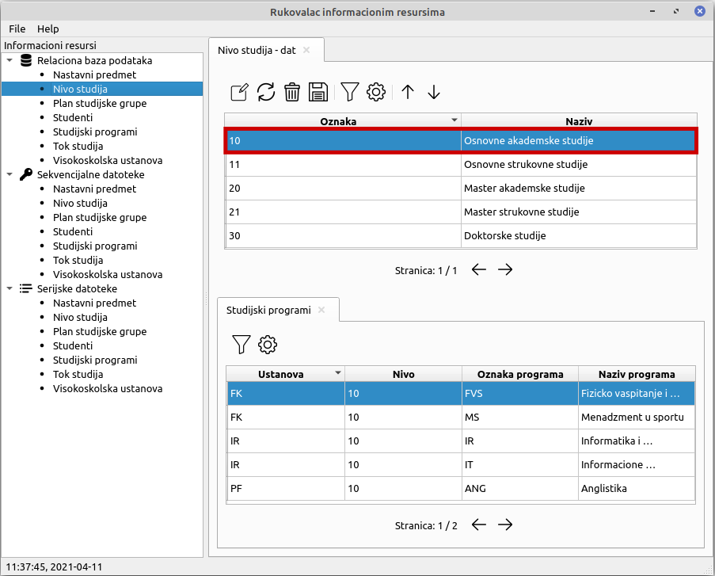Kreiranje sadrzaja se zapocinje klikom na prikazanu ikonicu u paleti
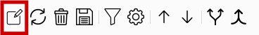Nakon toga, korisniku ce biti prikazan dijalog u koji treba da unese trazene podatke. Simbol 🔑 oznacava da je atribut primarni kljuc, to jest da je njegovo unosenje obavezno i da mora biti jedinstven. Simbol ❌ oznacava da je unosenje tog atributa obavezno. Ukoliko ispred imena atributa ne stoji simbol, taj atribut moze da se izostavi. Klikom na dugme OK potvrdjuje se kreiranje.
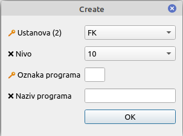Izmena sadrzaja se zapocinje klikom na prikazanu ikonicu u paleti
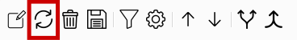Nakon toga, korisniku ce biti prikazan dijalog u kome treba da izmeni zeljene podatke. Simbol 🔑 oznacava da je atribut primarni kljuc, to jest da je njegovo unosenje obavezno i da mora biti jedinstven. Simbol ❌ oznacava da je unosenje tog atributa obavezno. Ukoliko ispred imena atributa ne stoji simbol, taj atribut moze da se izostavi. Klikom na dugme OK potvrdjuje se izmena.
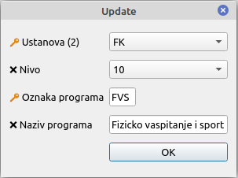Brisanje sadrzja se vrsi biranjem reda u tabeli i klikom na prikazanu ikonicu u paleti
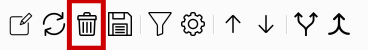Naon toga, korisnik treba da potvrdi ili otkaze brisanje.
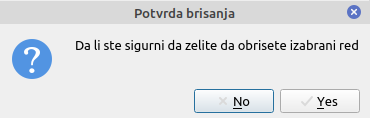Cuvanje sadrzaja se vrsi klikom na prikazanu ikonicu u paleti
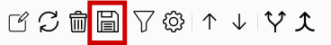Filtriranje sadrzaja se vrsi klikom na prikazanu ikonicu u paleti. Kada je filter ukljucen, ikonica postaje crvena
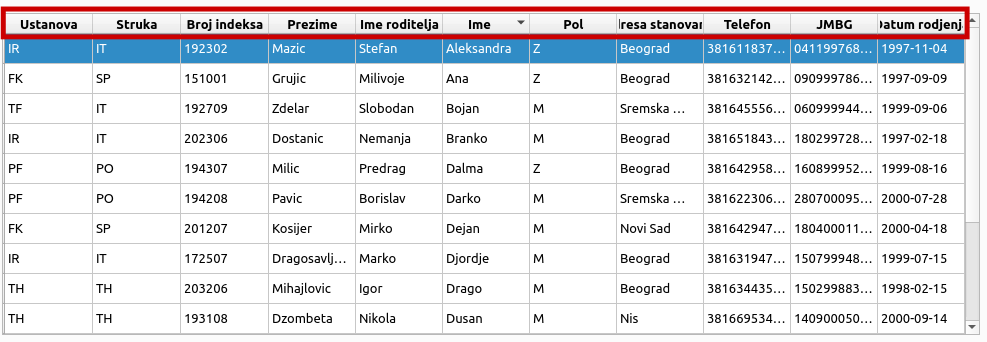Podesavanje filtera se zapocinje klikom na prikaznu ikonicu u paleti
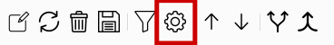Nakon toga, korisniku ce biti prikazan dijalog u kome treba da odabere na koji nacin zeli da filtrira podatke. Korisnik za svaki atribut moze da izabere operator poredjenja, kao i sadrzaj sa kojim treba da se poredi. Dostupni operatori poredjenja za sve atribute su jednako (=), nejednako (!=), kao (like), nije kao (not like). Za brojeve i datume postoje i atributi manje (<), manje ili jednako (<=), vece (>) i vece ili jednako (>=). Ukoliko korisnik ne zeli da koristi neki od ponudjenih atributa za filtriranje, dovoljno je da ga ostavi neispunjenog. Klikom na dugme OK potvrdjuje se podesavanje filtera.
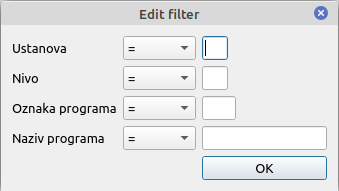